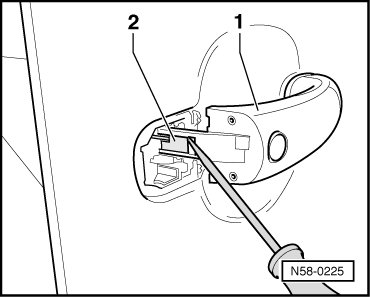
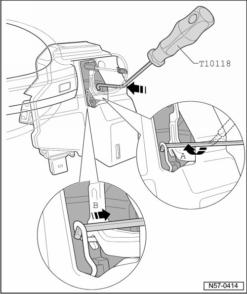

Door Handle
Rear Door
Door Handle
Removing
- Lock Cylinder Housing, Removing and Installing, refer to --> [ Lock Cylinder Housing ] Lock Cylinder Housing
- Door handle with cable routing (Kessy), refer to --> [ Door Handle with Cable Routing (Kessy) ] Rear Door Overview

- Unclip the clip - 2 - from the door handle.
- Swivel out door handle - 1 - from door.
Installation

- Guide assembly tool (T 10118) in - direction of arrow - into door through opening in the inner door plate.
- Light the inner part of door using a flashlight for better view.
- Hook assembly tool into spring - arrow A -.
- Engage spring into door lock by pulling installation tool - arrow B -.
The release lever is now locked into position.
- Swivel door handle into door.
- Pull the clip - 1 - into the metal opening and engage it in the door handle - 2 -.
• Press the door handle - 2 - onto the outer door panel during installation.
- Pulling door handle unlocks the release lever.
Install lock cylinder housing, refer to --> [ Lock Cylinder Housing ] Lock Cylinder Housing
• Always perform a function test. The door cannot be opened if it is not adjusted correctly or the release is not clipped in correctly.